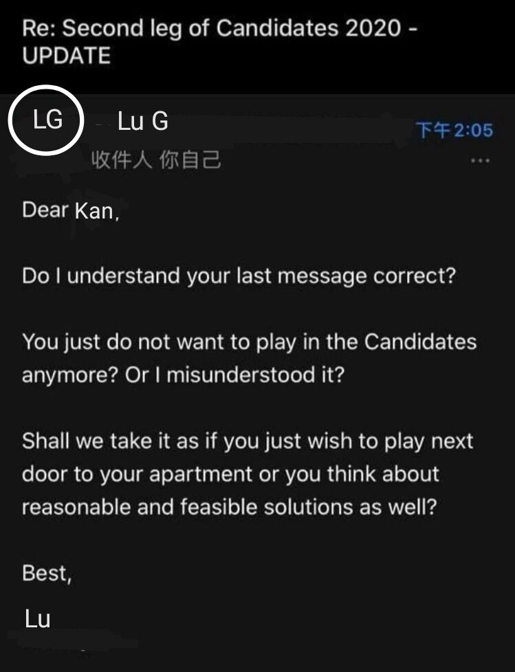

新闻|啸阚不满在纽约继续候选人赛，皋僇消极回应

FIDT候选人赛棋手啸阚认为，在美国纽约这种疫情高风险地区复赛过于危险，向FIDT主席皋僇发出了改变比赛地点的请求，但同时拒绝在FIDT备用比赛地点新德里比赛。对此，皋僇用一封十分敷衍的，带有语法错误的英文信进行了回应，啸阚对此表示不满。FIDT的部分成员认为皋僇作为主席有所失职，将在候选人赛复赛日期之前举办五人议事会进行讨论。会议人员名单:技术顾问Mark，裁判员代表Danny，仲裁员代表Daneel，棋手代表Larry和Abe。预祝会议圆满成功。（FIDT电台报道）